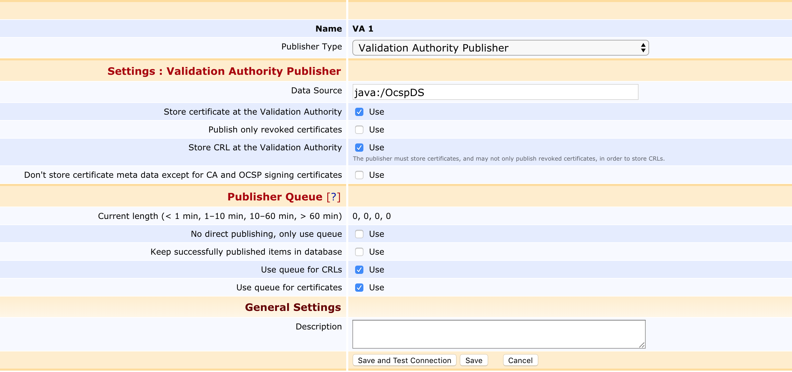

EJBCA 6.15.1 Release Notes
We couldn't stay away, so at the same time as the UI is being refurbished and prepared for our coming Common Criteria certification we've been busy adding some neat new features to EJBCA 6.15: Publishers Galore!
Feature List
Multi Group Publishing
In order to facilitate for users administrating large numbers of publishers referenced in multiple certificate profiles, we've implemented the Multi Group Publisher.
By referencing Multi Group Publishers instead of the affected publishers directly, actions such as adding or removing VAs can quickly permeate throughout all affected certificate profiles. The publisher also allows splitting referenced publishers into groups, which establishes parallel publishing queues.
SCP Publishing and VA Population
Due to popular demand for an alternative to the Peer Publisher in environments where establishing a Peer Connection between CA and VA isn't an option, we've created the SCP Publisher, which publishes certificates and CRLs to a remote location over SCP.
Conversely, in order to import certificates and CRLs exported by the SCP Publisher a VA, we've implemented the Certificate and CRL Reader Service.
GDPR Adapted Legacy VA Publisher
Just like we did for the Peer VA Publisher back in EJBCA 6.13, we've GDPR adapted the Legacy VA Publisher.

By enabling the new Don't store certificate meta data option at the bottom, VA publishing can be performed without writing any identifying information to the VA.
Revocation Time added to CertSafe Publisher
The output of the CertSafe Publisher has been amended to include revocation time.
EJBCA Compatibility Guide
A long requested feature, we've now started maintaining a compatibility guide in the documentation in regards to compatibility and testing status of JDKs, Application Servers, databases, HSMs, etc. For more information, see EJBCA Compatibility Guide.
Upgrade Information
As a minor release, the upgrade steps to EJBCA 6.15.1 are the same as to EJBCA 6.15. For upgrade instructions and information on upgrade paths, see Upgrading EJBCA
Change Log: Resolved Issues
For full details of fixed bugs and implemented features in EJBCA 6.15.1, refer to our JIRA Issue Tracker.
New Features
ECA-7202 - ACME system tests - analyse, improve and enable skipped system tests
ECA-7382 - GUI modifications in Edit Publisher for MultiGroupPublisher
ECA-7392 - Data structure for MultiGroupPublisher
ECA-7393 - Backend logic for MultiGroupPublisher
ECA-7395 - Code for converting between textfield data and MultiGroupPublishers groups
ECA-7396 - Implement PublisherSession.getPublisherNameToIdMap
ECA-7401 - Implement ConfigDump export for MultiGroupPublisher
ECA-7425 - Add SCP Publisher implementation
ECA-7426 - Implement Certificate/CRL Reader implementation
Improvements
ECA-3917 - Warn user when trying to creating multiple representations of the same P11 slot
ECA-7402 - Add synchronization to org.cesecore.util.ui.DynamicUiProperty.values
ECA-7406 - Move EnterpriseValidationAuthorityPublisher from va module into plugin-ee module
ECA-7409 - Add option to send JUnit tests standard output to console
ECA-7416 - Speed up import of certificate directory using the CLI
ECA-7420 - Minor security issue
ECA-7424 - Move CertSafePublisher into plugins-ee module
ECA-7430 - Add missing "isRequired" CCE field to ConfigDump
ECA-7432 - Colour-code modular protocol configuration table
ECA-7436 - GDPR Adapt the Legacy VA Publisher
ECA-7442 - Allow creation of quick zipreleases without having SVN installed
ECA-7446 - Add authorization to CustomPublisherContainer.getCustomUiPropertyList
ECA-7449 - Security: fix minor scanner issues
ECA-7450 - Multi Group Publisher: Only queue certificate statuses that will be published
ECA-7451 - Remove leftover from certificatestore build.xml
ECA-7453 - Disallow deletion of publishers in use by Multi Group Publisher
ECA-7454 - Documentation for Multi Group Publisher
ECA-7465 - Documentation: Missing steps in AD publisher TLS configuration
ECA-7468 - Add revocation time to CertSafe Publisher JSON
ECA-7471 - Allow system tests to run with EJBCA not on localhost
ECA-7479 - Prevent compiling with Java 11, as long as it doesn't work
ECA-7490 - Use relative keystore paths in ejbca-setup.sh scripts
ECA-7493 - Allow any user of full checked out source to make alpha CE ziprelease
ECA-7507 - Skip ProtectedDataPKCS11Test when no PKCS#11 library is configured
ECA-7510 - DnFieldExtractorTest fails in CE version
Bug Fixes
ECA-7336 - OCSP warningBeforeExpirationTime not working
ECA-7407 - Probing confluence during build even if doc-update=false
ECA-7408 - Don't shadow remote EJB client classes in system tests
ECA-7411 - AcmeOrderData is missing ORM for all db types except "mysql"
ECA-7412 - ACME ORM XML for postgres uses <lob></lob>
ECA-7434 - Add modular protocol configuration to Statedump
ECA-7441 - EJBCA WS tests fail with SunCertPathBuilderException
ECA-7455 - Security: security issue
ECA-7472 - AcmeWorkflowTest assumes "which" is available on test system
ECA-7476 - Regression: X-FRAME-OPTIONS sometimes blocks admin UI head banner
ECA-7487 - Creating Crypto Token on same slot as database protection breaks DB protection
ECA-7489 - batchenrollmentgui does not build
ECA-7497 - Fix VaEnterpriseValidationAuthorityPublisherTest test failure
ECA-7506 - test:run fails to compile CertificateCrlReaderSystemTest
ECA-7509 - Extra field added to the legacy VA Publisher
ECA-7515 - NPE in getCaaIdentities when using ACME